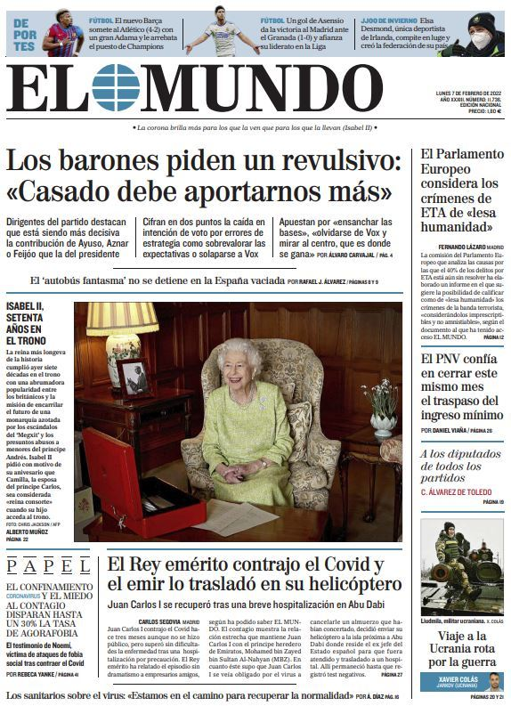

| El excandidato presidencial colombiano Rodolfo Hernández anuncia su retiro como senador
Por Ana Cucalón
Rodolfo Hernández, excandidato presidencial de Colombia, anunció este miércoles en un comunicado que renuncia a su curul en el Senado, puesto en el que estuvo dos meses y que obtuvo por ley tras quedar segundo en las últimas elecciones presidenciales. Agregó que de ahora más enfocará su trabajo en su partido, Liga de Gobernantes Anticorrupción.
"Con profundo respeto por la democracia, me siento como se sentiría Messi de portero, sin poder brindar toda mi capacidad ejecutiva a los colombianos que demandan verdaderos cambios", indicó Hernández.
El político colombiano dijo que en los próximos días definirá la fecha en la que formalmente presentará el documento correspondiente ante el Congreso.
|  |